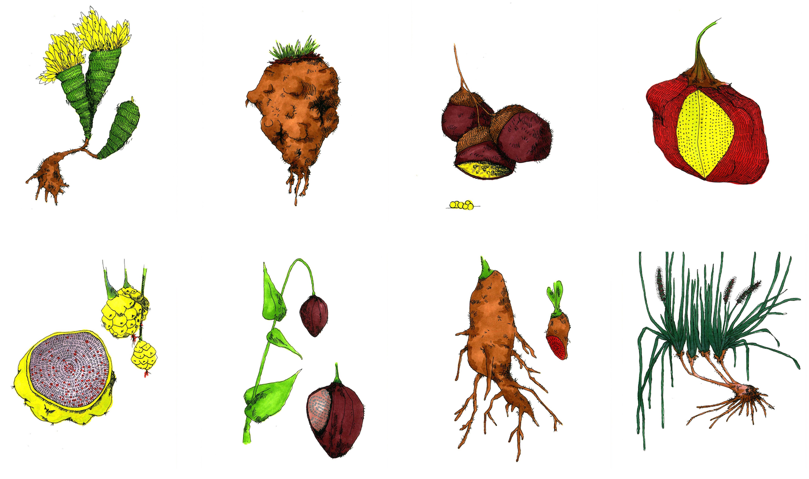

Rewilding is a set of procedurally-generated plant names, and
their imagined illustrations.
In 2007, fifty or so
nature-related words were removed from the Oxford Junior Dictionary.
These words included acorn, bluebell, kingfisher, lark, and
mistletoe. In response, writer Robert MacFarlane called for a
'rewilding' of language. These language-driven illustrations playfully
respond to that call.